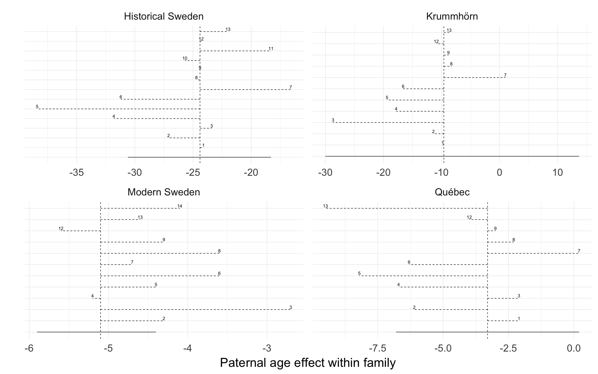

source("0__helpers.R")
library(brms)
opts_chunk$set(warning=TRUE, cache=F,cache.lazy=F,tidy=FALSE,autodep=TRUE,dev=c('png','pdf'),fig.width=20,fig.height=12.5,out.width='1440px',out.height='900px')Here we show the effect size estimates for paternal age in different robustness analyses.
paths = c("coefs/krmh/m3_children_linear.rds",
"coefs/rpqa/m3_children_linear.rds",
"coefs/ddb/m3_children_linear.rds",
"coefs/swed/m3_children_linear.rds",
list.files("coefs", full.names = TRUE, pattern = "^r.+rds$", recursive = T))
filenames = c("/r0","/r0","/r0","/r0",
list.files("coefs", full.names = TRUE, pattern = "^r.+rds$", recursive = T))
i=1
effect_estimates = data.frame()
models = list()
for (i in seq_along(paths)) {
filename = filenames[i]
model = readRDS(paths[i])
if (class(model) == "brmsfit") {
models[[filename]] = model
chg = paternal_age_10y_effect(model)[3,]
chg$model = filename
chg$robustness_analysis = as.numeric(str_match(filename, "/r(\\d+)")[,2])
chg$population = str_match(paths[i], "\\w+/(\\w+)/")[,2]
effect_estimates = rbind(chg, effect_estimates)
}
}
effect_estimates$median_estimate = as.numeric(effect_estimates$median_estimate)
effect_estimates = effect_estimates %>% arrange(robustness_analysis)
pops = c("krmh", "rpqa", "ddb", "swed")
effect_estimates$upper95 = effect_estimates$lower95 = NA
for(i in seq_along(pops)) {
pop = pops[i]
effs = effect_estimates[effect_estimates$population == pop, ]
effs$lower95 = effs$median_estimate[1]
effs$upper95 = effs$median_estimate
effs$lower95[1] = as.numeric(str_match(effs$ci_95[1], "\\[(-?[0-9.]+);")[,2])
effs$upper95[1] = as.numeric(str_match(effs$ci_95[1], ";(-?[0-9.]+)]")[,2])
effect_estimates[effect_estimates$population == pop, ] = effs
}
pops = c("krmh"='Krummhörn', "rpqa" = 'Québec', "ddb" = 'Historical Sweden', "swed" = 'Modern Sweden')
effect_estimates$population = pops[effect_estimates$population]ggplot(effect_estimates, aes(x = factor(robustness_analysis), y = median_estimate, ymin = lower95, ymax = upper95)) +
geom_hline(aes(yintercept = ifelse(robustness_analysis == 0, median_estimate, NA)), linetype = 'dashed') +
geom_linerange(aes(linetype = robustness_analysis == 0)) +
geom_text(aes(label = ifelse(robustness_analysis == 0, NA, robustness_analysis), group = effect), vjust = -0.3) +
scale_linetype_manual(values = c("FALSE" = 'dashed', "TRUE" = 'solid'), guide = F) +
facet_wrap(~ population, scales = "free") +
scale_x_discrete("") +
scale_y_continuous("Paternal age effect within family") +
theme(axis.ticks.y = element_blank(), axis.text.y = element_blank()) +
coord_flip()## Warning: Removed 46 rows containing missing values (geom_hline).## Warning: Removed 4 rows containing missing values (geom_text).
effect_estimates = effect_estimates %>% mutate(
model = recode(model, "/r0" = "m3_main_model"),
model = str_replace(model, "coefs/", ""),
model = str_replace(model, "\\.rds", ""),
model = paste0("<a href='",str_match(model, "([a-z]+)/([a-z]+)")[,2],"_robustness.html#",str_match(model, "([a-z]+)/([a-z]+)")[,3],"'>",model,"</a>")
)
effect_estimates$model = recode(effect_estimates$model, "/r0" = "m3_main_model")
pander(effect_estimates %>% select(model, median_estimate, ci_95))